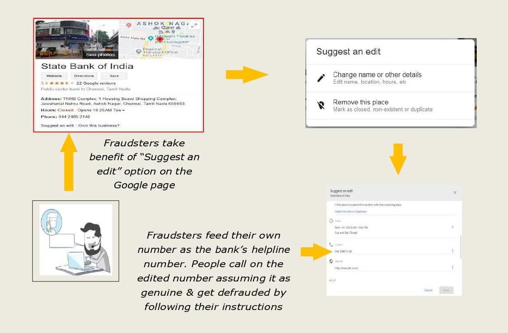
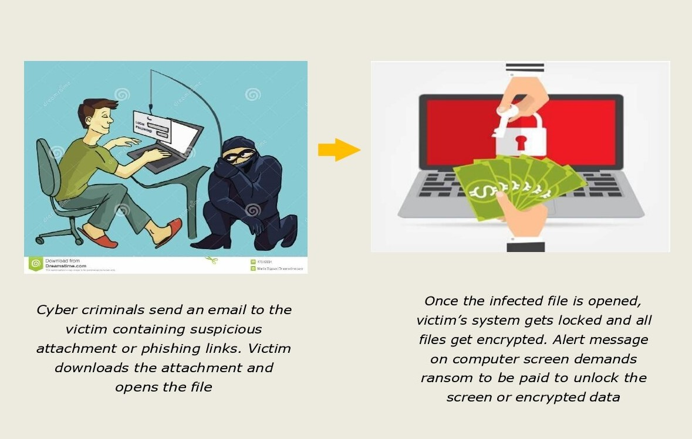
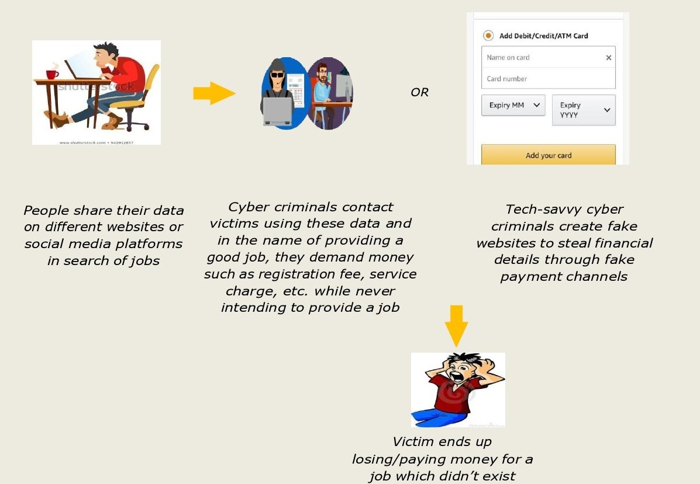
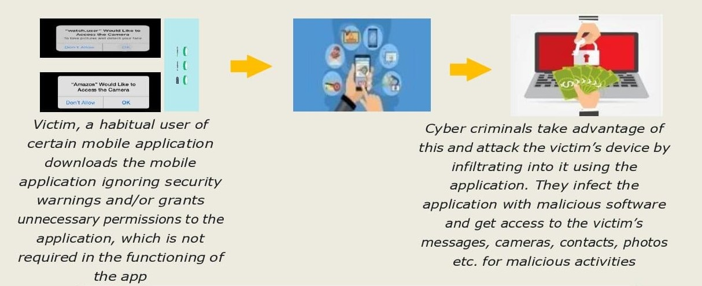

ATM/DEBIT CARD CLONING FRAUD
Each ATM/debit card has a magnetic strip in it containing confidential data. Cyber criminals use a skimmer machine to read this strip and capture the confidential data related to the card. Then they copy the data onto a blank card, which is used for fraudulent transactions. They use overlay devices/pin-hole camera/ spy camera or peep from behind in the queue to read ATM/Debit card PIN while it is being entered by the user on the ATM keypad/POS machines.

precautions
- Enter the PIN yourself taking due care to hide the PIN (as in image 1).
- Check for hidden cameras/skimmer devices while withdrawing cash (as in image 2).
- Physically check the keypad to ensure it does not have an overlay device.
- Do not allow anyone to stand beside or behind you while carrying out transaction with ATM/Debit card/Credit card.
- Do not keep a PIN which can be guessed easily. Keep changing your PIN.
- Ensure you get transaction receipt or confirmation through SMS.
- Ensure that any part of the ATM machine is open or loosely attached.
EDITED GOOGLE CUSTOMER CARE NUMBER FRAUD
Cyber fraudsters edit the customer care number of banks/airlines/food outlets/e- commerce entities etc. on Google page and customize it in such a manner that whenever someone searches on Google for the customer care number, the edited number of cyber criminals appears on top of the search results for that entity. Victim ends up calling the fraudsters instead of the real helpline numbers. The fraudsters portraying themselves as helpers actually give instructions to dupe the caller victim.
precautions
- Always search for customer care number from the official website of the banks/airlines/food or retail outlets/other e-commerce entity and not by searching the entity name on Google search.
- Toll free number for any bank is given on back/flip side of debit/credit card. Call on the given numbers only.
- Always remember that Google does not give verified information on searches.
RANSOMWARE ATTACKS
Ransomware is a category of malicious software which, when run, disables the functionality of a computer in some way. The ransomware program displays a message that demands payment to restore functionality. The malware, in effect, holds the computer system to ransom. In other words, ransomware is an extortion racket. Ransomware typically spreads through phishing emails or by unknowingly visiting an infected website.
precautions
- Do not open emails from unknown sources containing suspicious attachment or phishing links.
- Keep your antivirus up-to-date and windows firewall turned on and properly configured.
- Back up your most important files on a regular basis. Keep the important data on a separate hard disk.
- Have proper spam filters enabled in your e-mail account.
JUICE JACKING
Juice jacking is a kind of cyber fraud where data is copied from a smart phone, tablet or other electronic devices using a USB charging port that is actually used for both data connection and charging. The victim believes it to be a charging port only.

precautions
- Disable data transfer on your phone while charging.
- Switch off your device before charging in public places.
- Carry your own portable power pack/bank.
- Can buy a data disabled charging cable.
LOTTERY FRAUD/NIGERIAN FRAUD
Cyber fraudsters send e-mails/SMSs informing the recipient (victim) that he/she has won a lottery/prize worth millions of rupees/dollars and the recipient only needs to click on the link sent on their e-mail/mobile phone or to tell how they want to receive the prize money. However, on responding positively, the recipient is asked to pay money in the name of registration/shipment/service charges, GST etc. one after the other for releasing the prize money. This way the recipient keeps on paying the fraudsters until he/she realizes the fraud. The fraudsters were initially mainly from Nigeria and hence the terminology.

precautions
- Never respond to calls/SMSs/e-mails related to winning a lottery/prize or seeking personal or financial details.
- Have proper spam filters in your email account to stop receiving unsolicited emails.
- Follow the thumb rule: Never transfer funds to unknown persons or entities in promise of higher returns/winning prizes or lottery.
ONLINE JOB FRAUD
Cyber criminals advertise fake job offers using various platforms either online via fake websites. Victim, in search of a job, goes through these fake job offers and contacts the cyber criminal. Upon contacting cyber criminals, victim is asked to pay registration fee or make an advance payment (which they claim is refundable) to avail their services for getting a job. Victim transfers the money and follows the guidelines of the fraudster for getting a job and falls prey to the cyber crime. In some cases, a fake website phishes financial data through a fake payment channel.
precautions
- To avoid such frauds, it is necessary to submit your application to a registered website only.
- Do not make any advance payments for getting a job.
COMPUTER OR DEVICE HACKING
Hacking is the act of gaining access to a computer/device without legal authorisation. Cyber criminal uses various methods for hacking a victim‟s computer/device such as infecting a computer/device by a virus or malware. Hacking may lead to data corruption/deletion or data loss or stealing of data.

precautions
- Computers/laptops should have a firewall and antivirus installed, enabled and updated with latest versions.
- Never download or install pirated software, applications etc. on your computer, laptops or hand- held devices.
- Always scan external devices for viruses, while connecting to the computer.
- Be careful while browsing through a public Wi-Fi and avoid logging in to personal and professional accounts while using public Wi-Fi systems.
MOBILE APPLICATIONS FRAUD
Mobile applications may be mediums of cyber-attacks, stealing of confidential data or mode of getting access to the controls of your phone/device. People download mobile applications from unknown sources ignoring security warnings. These applications may have viruses which pass sensitive information or give control of your phone/device to some outside agent, who gets access to your contacts, passwords, financial data etc. Several mobile applications from unknown sources ask for unnecessary permissions for access to your phone/device, which one grants without due diligence. Thus, these mobile applications can access a huge amount of personal information, photographs etc. from your phone/device.
precautions
- Always install applications from trusted sources like for Android devices, use Google Play, for Apple devices use App Store. Please ensure that the app is having Play Protect shield.
- It is also important to read reviews about the app. If it has a negative review, read more to see if anybody noted any security concerns like bugs or unencrypted passwords.
- Update your software and mobile applications on a regular basis so that you don‟t miss on important security patches.
- Be careful while granting app permissions like a document scanning app does not require permission to access your location, call logs etc. Sometimes applications are filled with spyware and other types of malware.